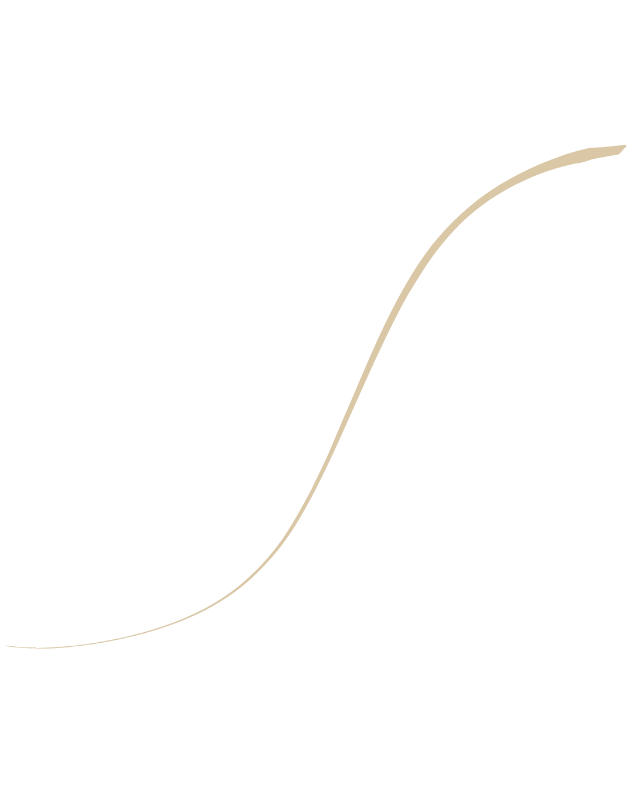
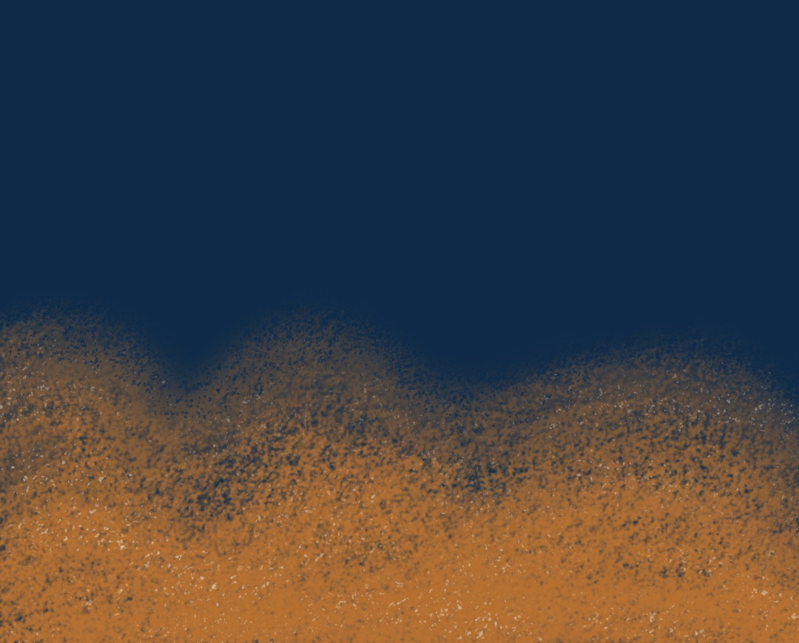

Tu as des images qui vivent dans ta tête, parfois depuis des années. Tu sais les voir. Tu sais les sentir.
Et pourtant, quand tu appuies sur le déclencheur, ce qui ressort ne ressemble pas vraiment à ce que tu voulais.
Tu n'es pas nulle en technique. Tu cherches quelqu'un qui la traduit dans ta langue.
Voir les prochaines datesÀ partir de 180 € · 2h30 · Bretagne Sud · samedi matin
Inscription via formulaire personnel de 3 questions.

Ici, on ne part pas de l'appareil. On part de toi.
Tu as déjà regardé des tutos, acheté un ebook, peut-être suivi une formation. Tu as entendu parler de diaphragme, d'ISO, de vitesse — et tu as fini par laisser ton appareil en mode auto, parce qu'au moins en mode auto, tu fais des photos (et c'est déjà beaucoup).
De ce que tu regardes, de ce qui te touche, de ce que tu as envie de montrer. Et c'est à partir de là qu'on remonte vers la technique : pas l'inverse.
C'est ce que j'appelle la technique traduite en émotions. Chaque réglage est relié à un effet visuel concret, à une sensation, à une intention. Pas à un schéma abstrait que tu oublieras la semaine suivante.
Et quand une image rate — ça arrive, et c'est tant mieux —, on ne la jette pas. On la regarde. Une photo qui ne ressemble pas à ce que tu voulais, ce n'est pas un échec : c'est une matière. Elle te dit ce qui s'est passé entre ton intention et ton geste. C'est exactement là qu'on apprend.
Je pars du principe que tu as déjà un regard. Mon boulot, c'est de te donner les outils pour le poser sur tes images.
Je m'appelle Pierre Diquelou. Je suis photographe-formateur en Bretagne Sud, basé près de Quimperlé.
Je ne suis pas le photographe star qui va te faire rêver avec son travail. Je suis celui qui se place à côté de toi — pas devant — pour t'aider à trouver ton regard, pas à copier le mien.
Une voie d'escalade, ça se lit avant de se grimper. Tu observes les prises, tu visualises le mouvement, tu sens où ton corps va aller. La photo, c'est pareil. Sauf qu'ici, les prises s'appellent lumière, cadre, distance, exposition.
Mon métier, c'est de traduire. De prendre ce qui te semble flou, technique, intimidant, et de te le rendre dans une forme que ta sensibilité peut attraper. Avec des exemples concrets, parfois des comparaisons avec la montagne ou le sport — pas par coquetterie, parce que ça marche mieux qu'un tableau de réglages.
(Et si je te ressers une analogie d'escalade pour la troisième fois de la matinée, tu peux me le faire remarquer.)
La technique traduite en émotions. Pas de jargon, pas de recettes : un cadre simple pour que tu produises enfin les images que tu as en tête.
La Mise au Point, c'est un atelier terrain de 2h30, en Bretagne Sud, en extérieur.
Un temps court, mais intense, où on sort ensemble - toi et moi, ou toi et une autre personne - et où on travaille sur ce que tu vois, ce que tu ressens, et ce que ton appareil en fait.
Ce n'est pas un cours théorique. C'est une expérience guidée. On commence par des exercices sensoriels (regarder, sentir, écouter le paysage avant de le photographier), puis on traduit ça en choix techniques simples. Tu repars avec une nouvelle relation à ton appareil : moins de peur, plus de dialogue.
Tu repartiras avec
Tous les niveaux sont accueillis. Tu peux venir en mode auto, tu peux venir avec trois réglages à moitié compris, tu peux venir en ayant lu dix livres. Je m'adapte à toi, pas l'inverse.
Côté pratique : tu viens avec ton boîtier (ou ton téléphone), une tenue confortable et imperméable — Bretagne oblige —, de quoi marcher un peu, et un carnet si tu aimes écrire. La pluie n'arrête pas la séance : sauf vraie tempête, on y va.
Le prix est là, lisible. Mais avant de regarder le prix, regarde l'expérience : ce ne sont pas deux versions du même atelier, ce sont deux pédagogies différentes.
Solo — 180 €
Tu es seule avec moi pendant 2h30. Tout le temps, toute l'attention, tout l'espace sont pour toi.
C'est le format que je recommande si tu es du genre à te mettre en retrait dès qu'il y a quelqu'un d'autre, ou si ton projet photo est très personnel et que tu as besoin d'une bulle pour en parler vraiment.
Duo — 300 € (soit 150 € par personne)
Vous êtes deux, avec moi. Ce n'est pas une version économique du solo. C'est un format qui fonctionne parce qu'il ouvre une dynamique miroir : tu vois comment l'autre regarde, tu es challengée sans être jugée, tu apprends aussi en observant.
Ça demande une qualité particulière : être prête à laisser de la place à un autre regard que le tien. Toutes les sensibilités ne sont pas faites pour ça, et c'est très bien.
La bonne question n'est pas : « Combien je veux payer ? » C'est : « De quelle expérience j'ai besoin en ce moment ? »
Si tu hésites, écris-moi avant de réserver. On en discute.
Pro en devenir, photographe amateur depuis longtemps, ou simplement curieuse de ton appareil — l'atelier se passe pareil. Voici ce que Linda en a dit après sa Mise au Point.
Ce que je n'avais pas compris en trois mois de tutos, je l'ai compris en une matinée avec Pierre. Il est clair, attentif, et il parle une langue qu'on comprend.
Ce n'est pas un amphi. Ce n'est pas une course à la performance technique. Ce n'est pas une démonstration de matériel. Tu ne vas pas te retrouver avec dix personnes et dix boîtiers qui brillent plus que le tien.
C'est une table, deux chaises, une matinée, ton regard et le mien.
Celui que tu as. Reflex, hybride, compact, même un vieux boîtier qui traîne depuis dix ans. Pas besoin d'investir avant de venir.
Oui. On travaille le regard et la lumière, pas la marque. Le téléphone est un vrai outil, pas un lot de consolation.
Dans ta langue. Pas en jargon. Si un mot technique arrive, je le traduis avant de l'utiliser, et je vérifie avec toi qu'on est au même endroit.
La Mise au Point est calibrée pour débloquer une pratique. Si tu es pro et que ce que tu cherches, c'est creuser une démarche personnelle, construire une série cohérente, sortir du commercial pour aller vers ton propre travail — c'est la Série Signature qui est faite pour ça. Écris-moi, on regarde ensemble si ça fait sens pour toi.
Bretagne oblige, la pluie fait partie du jeu. Sauf vraie tempête, on y va : la lumière de pluie, c'est souvent celle qu'on cherche sans savoir le dire. Prévois juste une tenue qui te tient au sec et au chaud. Et si la météo nous force vraiment à décaler, on cale une autre date, simplement.
Non. Tu peux venir avec trois images qui t'habitent, si tu veux, mais ce n'est pas un devoir. Arriver disponible suffit.
Les ateliers ont lieu plusieurs samedis par an, en matinée (généralement 9h30 à 12h), entre Vannes et Quimper. Le lieu exact (plage, forêt, port, ville) est choisi avec toi dans l'email qui suit ta confirmation, en fonction de ce que tu as envie de photographier. Tu viens avec le boîtier que tu as, même un ancien, même un téléphone. Un carnet, si tu aimes écrire.
Pour rejoindre l'atelier, tu réponds à trois questions courtes ci-dessous. Je lis tes réponses, et je te reviens personnellement sous 48h — soit avec un lien pour confirmer ta place, soit pour te dire que ce n'est peut-être pas le bon endroit pour toi en ce moment, et pourquoi. Dans les deux cas, tu as une réponse de ma main.
Pas de piège, pas de jury. Ces trois questions m'aident juste à voir où tu en es, pour que la matinée soit vraiment ajustée à toi. Tu mets dix minutes, grand maximum.
La Mise au Point, c'est une porte d'entrée. Elle suffit largement si ce que tu veux, c'est débloquer ta pratique et repartir avec des repères concrets.
Mais peut-être que tu es à un autre endroit. Peut-être que tu veux aller au bout d'une série, construire une première vraie cohérence dans ton travail, et oser dire « je suis photographe » ou « je suis artiste » sans te sentir imposteur.
Dans ce cas, j'ai un accompagnement individuel sur 8 semaines que j'appelle la Série Signature. Six séances en 1:1, une mini-série finale de 8 à 12 images, et le temps de poser le pont entre ce que tu vois et ce que tu produis.
Je t'en parle sur la page dédiée si tu veux creuser.
Découvrir la Série SignatureSi tu as une question avant de réserver, écris-moi. Je te réponds personnellement.
Belle journée à toi 🙏🏻